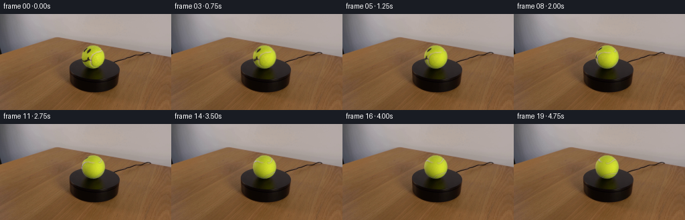
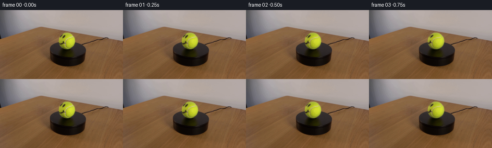
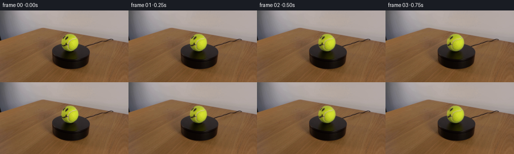
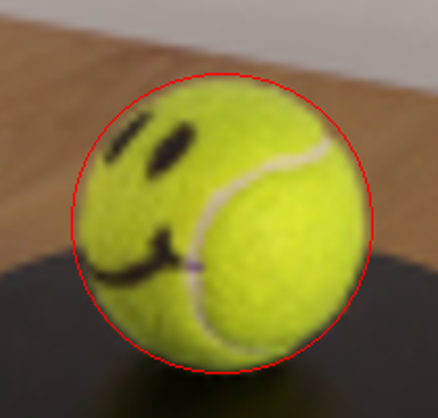
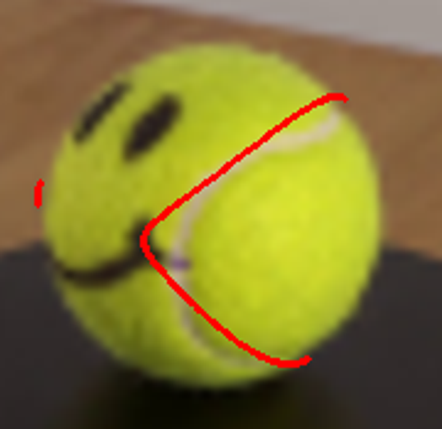
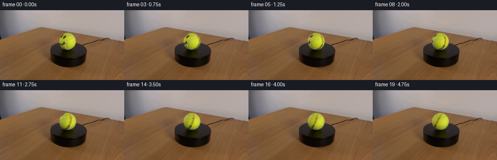
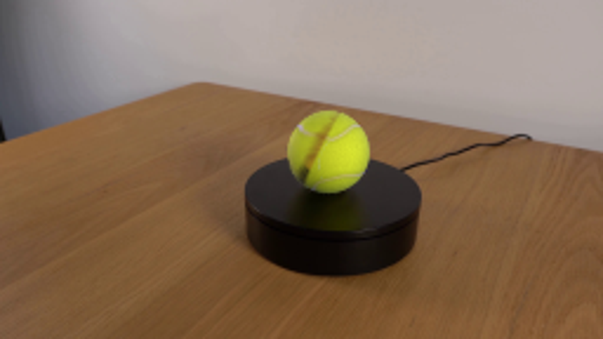
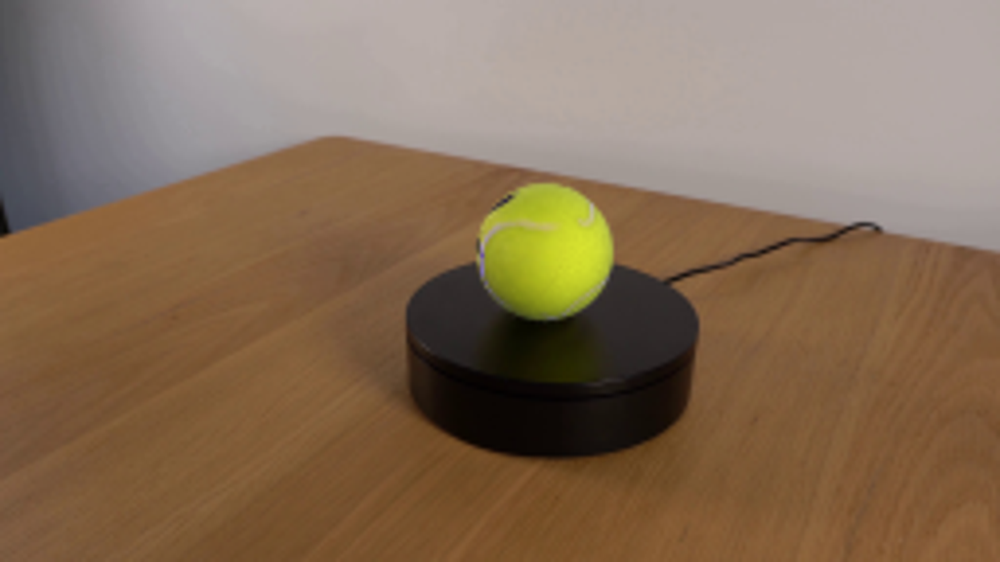
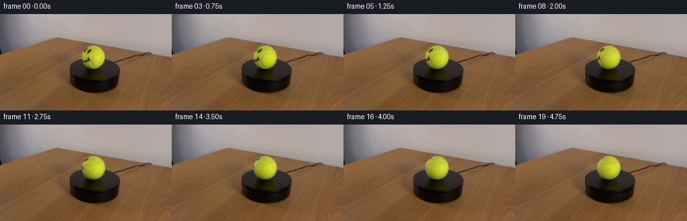

CODING AGENTS AS PIXEL WORLD MODELS
traex/GPT-6.1-Sol · 0168
点击播放 · 原生 RGB 像素
逐轮保存的候选
回放视频、检查图与代码变化。
每份候选均可单独播放。实际图片检查记录在下方工具轨迹中。
候选 01播放与检查图
点击播放 · 原生 RGB 像素

展开代码变化
--- 上一保存版本
+++ 本次保存版本
@@ -0,0 +1,111 @@
+from pathlib import Path
+import numpy as np
+from PIL import Image
+from scipy.ndimage import map_coordinates, gaussian_filter
+from scipy.spatial.transform import Rotation
+from scipy.interpolate import CubicSpline
+from scipy.spatial import cKDTree
+import artifact_io
+
+ROOT=Path(__file__).resolve().parent
+IMG=np.asarray(Image.open(ROOT/'first_frame.png').convert('RGB'),dtype=np.float64)
+H,W=IMG.shape[:2]
+CX,CY,R=139.12,64.18,17.83
+Y,X=np.mgrid[:H,:W]
+x=(X-CX)/R; y=(Y-CY)/R
+rho=np.sqrt(x*x+y*y)
+z=np.sqrt(np.maximum(0,1-x*x-y*y))
+n=np.stack([x,y,z],axis=-1)
+
+# The illumination is fixed to the laboratory, not to the rotating surface.
+def basis(v):
+ x,y,z=v[...,0],v[...,1],v[...,2]
+ return np.stack([np.ones_like(x),x,y,z,x*y,x*z,y*z,x*x,y*y,y*y*y,x*y*y],axis=-1)
+B=basis(n)
+sel=(rho<.91)&(IMG[:,:,1]>90)&(IMG[:,:,1]>IMG[:,:,0]*1.035)&(IMG[:,:,2]<IMG[:,:,1]*.35)
+coeff=np.linalg.lstsq(B[sel],IMG[sel],rcond=None)[0]
+# Robust fitting removes traces of black ink and the white seam.
+for _ in range(6):
+ pred=B@coeff
+ err=np.linalg.norm((pred-IMG)/[1,1,.6],axis=-1)
+ good=sel&(err<23)
+ coeff=np.linalg.lstsq(B[good],IMG[good],rcond=None)[0]
+def lighting(v):
+ return np.clip(basis(v)@coeff,[70,80,15],[222,235,70])
+LIGHT=lighting(n)
+ALBEDO=np.clip(IMG/np.maximum(LIGHT,1),0,3)
+
+# The observed raised seam is continued on the unseen hemisphere. Its
+# visible arc is read directly from the supplied ball, never a new motif.
+points=np.array([
+ [151.80,51.95],[151.4,53.5],[149.5,55.0],[146.8,56.1],
+ [143.7,56.8],[141.2,58.0],[138.9,59.6],[137.1,61.2],
+ [135.75,63.0],[134.85,65.0],[134.72,67.6],[134.90,70.2],
+ [135.65,72.4],[137.1,74.7],[139.1,76.5],[141.3,77.6],
+ [143.8,78.25],[146.2,78.15],[148.2,77.8],[149.9,78.15]
+])
+p=(points-[CX,CY])/R
+p=p/np.maximum(1,np.linalg.norm(p,axis=1,keepdims=True)/.998)
+front=np.c_[p,np.sqrt(np.maximum(0,1-np.sum(p*p,axis=1)))]
+# Smoothly continue from the lower-right limb, round the rear surface,
+# and back to the upper-right limb. This is a single continuous seam.
+back=np.array([
+ front[-1], [.71,.70,-.09],[.91,.38,-.15],[.89,.10,-.45],
+ [.75,-.02,-.66],[.43,-.03,-.90],[.08,-.03,-1.0],
+ [-.30,-.03,-.96],[-.60,-.10,-.79],[-.70,-.36,-.62],
+ [-.57,-.64,-.52],[-.26,-.88,-.40],[.10,-.96,-.27],
+ [.40,-.89,-.19],[.65,-.74,-.05],front[0]
+])
+back=back/np.linalg.norm(back,axis=1,keepdims=True)
+cur=CubicSpline(np.arange(len(back)),back)(np.linspace(0,len(back)-1,1000))
+cur/=np.linalg.norm(cur,axis=1,keepdims=True)
+seamtree=cKDTree(cur)
+
+# Small-scale felt variation on the surface, made without learned textures.
+rng=np.random.default_rng(904)
+noise=rng.normal(0,1,(384,768))
+noise=gaussian_filter(noise,.7,mode='wrap')
+noise/=noise.std()
+
+def texture(q):
+ q=q.reshape(-1,3)
+ u=CX+R*q[:,0]; v=CY+R*q[:,1]
+ sampled=np.stack([map_coordinates(ALBEDO[:,:,k],[v,u],order=1,mode='nearest') for k in range(3)],axis=-1)
+ lon=np.arctan2(q[:,0],q[:,2]); lat=np.arcsin(np.clip(q[:,1],-1,1))
+ felt=map_coordinates(noise,[(lat/np.pi+.5)*383,(lon/(2*np.pi)+.5)*767],order=1,mode='wrap')
+ clean=np.ones_like(q)+felt[:,None]*np.array([.010,.011,.020])
+ dist=seamtree.query(q)[0]
+ line=np.exp(-.5*(dist/.035)**2)
+ groove=np.exp(-.5*(dist/.064)**2)
+ clean*=1-.12*groove[:,None]
+ # Light cream seam, very softly edged and embedded in the felt.
+ clean=clean*(1-line[:,None])+np.array([1.01,.92,2.45])*line[:,None]
+ # Keep observed albedo over the visible hemisphere; extrapolate only at
+ # the rim where the photograph mixes foreground and background pixels.
+ blend=np.clip((q[:,2]-.10)/.12,0,1)
+ blend=blend*blend*(3-2*blend)
+ tex=sampled*blend[:,None]+clean*(1-blend[:,None])
+ return tex
+
+# Soft sphere coverage; subtracting the initial rendering preserves the
+# original photographic silhouette, contact shadow and every background pixel.
+alpha=np.clip((1.006-rho)*R/1.1,0,1)
+region=alpha>0
+norms=n[region]
+fixed=LIGHT[region]
+initial=texture(norms)*fixed
+axis=np.array([0,-np.cos(np.deg2rad(23)),np.sin(np.deg2rad(23))])
+frames=[IMG.astype(np.uint8)]
+for i in range(1,20):
+ angle=np.deg2rad(22)*i/4
+ rot=Rotation.from_rotvec(axis*angle).as_matrix()
+ original_normals=norms@rot
+ color=texture(original_normals)*fixed
+ out=IMG.copy()
+ out[region]+=alpha[region,None]*(color-initial)
+ frames.append(np.clip(np.rint(out),0,255).astype(np.uint8))
+frames=np.stack(frames)
+artifact_io.save(frames,ROOT)
+if __name__=='__main__':
+ Image.fromarray(frames[10]).resize((1024,576)).save(ROOT/'.tmp/middle.png')
+ Image.fromarray(frames[19]).resize((1024,576)).save(ROOT/'.tmp/last.png')
候选 02播放与检查图
点击播放 · 原生 RGB 像素


展开代码变化
--- 上一保存版本 +++ 本次保存版本 @@ -82,7 +82,7 @@ clean=clean*(1-line[:,None])+np.array([1.01,.92,2.45])*line[:,None] # Keep observed albedo over the visible hemisphere; extrapolate only at # the rim where the photograph mixes foreground and background pixels. - blend=np.clip((q[:,2]-.10)/.12,0,1) + blend=np.clip((q[:,2]-.38)/.24,0,1) blend=blend*blend*(3-2*blend) tex=sampled*blend[:,None]+clean*(1-blend[:,None]) return tex @@ -102,7 +102,8 @@ original_normals=norms@rot color=texture(original_normals)*fixed out=IMG.copy() - out[region]+=alpha[region,None]*(color-initial) + residual=(IMG[region]-initial)*np.exp(-(i/2.8)**2) + out[region]=IMG[region]*(1-alpha[region,None])+alpha[region,None]*(color+residual) frames.append(np.clip(np.rint(out),0,255).astype(np.uint8)) frames=np.stack(frames) artifact_io.save(frames,ROOT)
候选 03播放与检查图
点击播放 · 原生 RGB 像素


展开代码变化
--- 上一保存版本 +++ 本次保存版本 @@ -59,7 +59,9 @@ back=back/np.linalg.norm(back,axis=1,keepdims=True) cur=CubicSpline(np.arange(len(back)),back)(np.linspace(0,len(back)-1,1000)) cur/=np.linalg.norm(cur,axis=1,keepdims=True) -seamtree=cKDTree(cur) +visible_curve=CubicSpline(np.arange(len(front)),front)(np.linspace(0,len(front)-1,1000)) +visible_curve/=np.linalg.norm(visible_curve,axis=1,keepdims=True) +seamtree=cKDTree(np.concatenate([visible_curve,cur])) # Small-scale felt variation on the surface, made without learned textures. rng=np.random.default_rng(904) @@ -97,7 +99,7 @@ axis=np.array([0,-np.cos(np.deg2rad(23)),np.sin(np.deg2rad(23))]) frames=[IMG.astype(np.uint8)] for i in range(1,20): - angle=np.deg2rad(22)*i/4 + angle=np.deg2rad(16)*i/4 rot=Rotation.from_rotvec(axis*angle).as_matrix() original_normals=norms@rot color=texture(original_normals)*fixed
候选 04播放与检查图
点击播放 · 原生 RGB 像素

展开代码变化
--- 上一保存版本
+++ 本次保存版本
@@ -8,6 +8,7 @@
import artifact_io
ROOT=Path(__file__).resolve().parent
+(ROOT/'.tmp').mkdir(exist_ok=True)
IMG=np.asarray(Image.open(ROOT/'first_frame.png').convert('RGB'),dtype=np.float64)
H,W=IMG.shape[:2]
CX,CY,R=139.12,64.18,17.83
@@ -89,8 +90,8 @@
tex=sampled*blend[:,None]+clean*(1-blend[:,None])
return tex
-# Soft sphere coverage; subtracting the initial rendering preserves the
-# original photographic silhouette, contact shadow and every background pixel.
+# Soft sphere coverage preserves the photographic silhouette and contact
+# shadow. A short residual blend keeps the first transition imperceptible.
alpha=np.clip((1.006-rho)*R/1.1,0,1)
region=alpha>0
norms=n[region]
可观测工具轨迹
实际执行的命令与返回图片。
命令 1exit 0
/bin/bash -lc "ls -la && cat prompt.txt && printf '\\n---RULES---\\n' && cat GENERATION_RULES.md"
命令 2exit 0
/bin/bash -lc "cat artifact_io.py && python - <<'PY'
from PIL import Image
im=Image.open('first_frame.png'); print(im.size)
im.resize((1024,576)).save('.tmp/enlarged.png')
PY"命令 3exit 0
/bin/bash -lc "python - <<'PY'
from PIL import Image
im=Image.open('first_frame.png'); im.crop((114,40,163,87)).resize((588,564)).save('.tmp/ball.png')
import numpy as np
ar=np.asarray(im); a=ar[40:87,114:163].astype(float); mask=(a[:,:,1]>90)&(a[:,:,0]>75)&(a[:,:,2]<a[:,:,1]*.6)
for y in range(44,84):
xs=np.where(mask[y-40])[0]+114 if 40<=y<87 else []
if len(xs): print(y,min(xs),max(xs))
PY"命令 4exit 0
/bin/bash -lc "python - <<'PY'
from PIL import Image
import numpy as np
im=np.asarray(Image.open('first_frame.png'))
for y in range(47,82,3):
print(y,[(x,im[y,x].tolist()) for x in range(122,157,4)])
PY"命令 5exit 0
/bin/bash -lc "python - <<'PY'
import numpy as np
from PIL import Image,ImageDraw
im=Image.open('first_frame.png').resize((1024,576))
d=ImageDraw.Draw(im)
d.ellipse((121.2*4,46.3*4,157.1*4,82.1*4),outline='red',width=1)
im.crop((450,150,660,350)).resize((630,600)).save('.tmp/ellipse.png')
PY"命令 6exit 0
/bin/bash -lc "python - <<'PY' import importlib.util for s in ['scipy','cv2','numpy','PIL']: print(s, bool(importlib.util.find_spec(s))) PY"
命令 7exit 0
/bin/bash -lc "cat > .tmp/fit_seam.py <<'PY'
import numpy as np
from scipy.spatial.transform import Rotation
from scipy.optimize import least_squares
from PIL import Image,ImageDraw
p=np.array([(150.5,54),(148.5,55.5),(144.5,56.2),(141.0,58.0),(138.5,60.0),(136.5,61.7),(135.4,63.5),(134.8,66.0),(134.9,69.0),(135.2,72.0),(136.7,74.5),(139.0,76.8),(141.5,78.0),(144.3,78.3),(147.0,77.7)])
q=(p-np.array([139.1,64.2]))/17.8
norm=np.c_[q,np.sqrt(np.maximum(0,1-np.sum(q*q,axis=1)))]
t=np.linspace(0,np.pi*2,720,endpoint=False)
def curve(par):
lat=par[3]*np.cos(2*t)
n=np.array([np.cos(lat)*np.cos(t),np.cos(lat)*np.sin(t),np.sin(lat)]).T
return n@Rotation.from_rotvec(par[:3]).as_matrix().T
def res(par):
ns=curve(par)
d=norm[:,None,:]-ns[None,:,:]
idx=(d*d).sum(2).argmin(1)
# also avoid unobserved front seam
vis=ns[:,2]>.25
# distance of front-facing curve to measured seam rough
df=((ns[vis,None,:]-norm[None,:,:])**2).sum(2).min(1)
# weak forward fitting term to prevent extra visible arc
return np.r_[(norm-ns[idx]).ravel(),.08*np.sqrt(df),.05*(par[3]-.7)]
# variable residual length, don't use visible extra term
def res(par):
ns=curve(par)
d=norm[:,None,:]-ns[None,:,:]
idx=(d*d).sum(2).argmin(1)
return np.r_[(norm-ns[idx]).ravel(),.025*(par[3]-.75)]
rng=np.random.default_rng(4)
best=None
for i in range(32):
init=np.r_[rng.normal(size=3)*1.7,rng.uniform(.5,.9)]
sol=least_squares(res,init,bounds=([-np.inf]*3+[.25],[np.inf]*3+[1.3]),max_nfev=140,diff_step=.0005)
cost=np.mean(res(sol.x)**2)
if best is None or cost<best[0]:
best=(cost,sol.x)
print(best)
np.save('.tmp/seam_params.npy',best[1])
im=Image.open('first_frame.png').resize((1024,576))
d=ImageDraw.Draw(im)
ns=curve(best[1]); pix=ns[:,:2]*17.8+np.array([139.1,64.2])
for k in range(len(ns)):
if ns[k,2]>0:
x,y=pix[k]*4; d.ellipse((x-1,y-1,x+1,y+1),fill='red')
im.crop((470,170,650,345)).resize((720,700)).save('.tmp/seam_fit.png')
PY
OPENBLAS_NUM_THREADS=1 python .tmp/fit_seam.py"命令 8exit 0
/bin/bash -lc "cat > generate.py <<'PY'
from pathlib import Path
import numpy as np
from PIL import Image
from scipy.ndimage import map_coordinates, gaussian_filter
from scipy.spatial.transform import Rotation
from scipy.interpolate import CubicSpline
from scipy.spatial import cKDTree
import artifact_io
ROOT=Path(__file__).resolve().parent
IMG=np.asarray(Image.open(ROOT/'first_frame.png').convert('RGB'),dtype=np.float64)
H,W=IMG.shape[:2]
CX,CY,R=139.12,64.18,17.83
Y,X=np.mgrid[:H,:W]
x=(X-CX)/R; y=(Y-CY)/R
rho=np.sqrt(x*x+y*y)
z=np.sqrt(np.maximum(0,1-x*x-y*y))
n=np.stack([x,y,z],axis=-1)
# The illumination is fixed to the laboratory, not to the rotating surface.
def basis(v):
x,y,z=v[...,0],v[...,1],v[...,2]
return np.stack([np.ones_like(x),x,y,z,x*y,x*z,y*z,x*x,y*y,y*y*y,x*y*y],axis=-1)
B=basis(n)
sel=(rho<.91)&(IMG[:,:,1]>90)&(IMG[:,:,1]>IMG[:,:,0]*1.035)&(IMG[:,:,2]<IMG[:,:,1]*.35)
coeff=np.linalg.lstsq(B[sel],IMG[sel],rcond=None)[0]
# Robust fitting removes traces of black ink and the white seam.
for _ in range(6):
pred=B@coeff
err=np.linalg.norm((pred-IMG)/[1,1,.6],axis=-1)
good=sel&(err<23)
coeff=np.linalg.lstsq(B[good],IMG[good],rcond=None)[0]
def lighting(v):
return np.clip(basis(v)@coeff,[70,80,15],[222,235,70])
LIGHT=lighting(n)
ALBEDO=np.clip(IMG/np.maximum(LIGHT,1),0,3)
# The observed raised seam is continued on the unseen hemisphere. Its
# visible arc is read directly from the supplied ball, never a new motif.
points=np.array([
[151.80,51.95],[151.4,53.5],[149.5,55.0],[146.8,56.1],
[143.7,56.8],[141.2,58.0],[138.9,59.6],[137.1,61.2],
[135.75,63.0],[134.85,65.0],[134.72,67.6],[134.90,70.2],
[135.65,72.4],[137.1,74.7],[139.1,76.5],[141.3,77.6],
[143.8,78.25],[146.2,78.15],[148.2,77.8],[149.9,78.15]
])
p=(points-[CX,CY])/R
p=p/np.maximum(1,np.linalg.norm(p,axis=1,keepdims=True)/.998)
front=np.c_[p,np.sqrt(np.maximum(0,1-np.sum(p*p,axis=1)))]
# Smoothly continue from the lower-right limb, round the rear surface,
# and back to the upper-right limb. This is a single continuous seam.
back=np.array([
front[-1], [.71,.70,-.09],[.91,.38,-.15],[.89,.10,-.45],
[.75,-.02,-.66],[.43,-.03,-.90],[.08,-.03,-1.0],
[-.30,-.03,-.96],[-.60,-.10,-.79],[-.70,-.36,-.62],
[-.57,-.64,-.52],[-.26,-.88,-.40],[.10,-.96,-.27],
[.40,-.89,-.19],[.65,-.74,-.05],front[0]
])
back=back/np.linalg.norm(back,axis=1,keepdims=True)
cur=CubicSpline(np.arange(len(back)),back)(np.linspace(0,len(back)-1,1000))
cur/=np.linalg.norm(cur,axis=1,keepdims=True)
seamtree=cKDTree(cur)
# Small-scale felt variation on the surface, made without learned textures.
rng=np.random.default_rng(904)
noise=rng.normal(0,1,(384,768))
noise=gaussian_filter(noise,.7,mode='wrap')
noise/=noise.std()
def texture(q):
q=q.reshape(-1,3)
u=CX+R*q[:,0]; v=CY+R*q[:,1]
sampled=np.stack([map_coordinates(ALBEDO[:,:,k],[v,u],order=1,mode='nearest') for k in range(3)],axis=-1)
lon=np.arctan2(q[:,0],q[:,2]); lat=np.arcsin(np.clip(q[:,1],-1,1))
felt=map_coordinates(noise,[(lat/np.pi+.5)*383,(lon/(2*np.pi)+.5)*767],order=1,mode='wrap')
clean=np.ones_like(q)+felt[:,None]*np.array([.010,.011,.020])
dist=seamtree.query(q)[0]
line=np.exp(-.5*(dist/.035)**2)
groove=np.exp(-.5*(dist/.064)**2)
clean*=1-.12*groove[:,None]
# Light cream seam, very softly edged and embedded in the felt.
clean=clean*(1-line[:,None])+np.array([1.01,.92,2.45])*line[:,None]
# Keep observed albedo over the visible hemisphere; extrapolate only at
# the rim where the photograph mixes foreground and background pixels.
blend=np.clip((q[:,2]-.10)/.12,0,1)
blend=blend*blend*(3-2*blend)
tex=sampled*blend[:,None]+clean*(1-blend[:,None])
return tex
# Soft sphere coverage; subtracting the initial rendering preserves the
# original photographic silhouette, contact shadow and every background pixel.
alpha=np.clip((1.006-rho)*R/1.1,0,1)
region=alpha>0
norms=n[region]
fixed=LIGHT[region]
initial=texture(norms)*fixed
axis=np.array([0,-np.cos(np.deg2rad(23)),np.sin(np.deg2rad(23))])
frames=[IMG.astype(np.uint8)]
for i in range(1,20):
angle=np.deg2rad(22)*i/4
rot=Rotation.from_rotvec(axis*angle).as_matrix()
original_normals=norms@rot
color=texture(original_normals)*fixed
out=IMG.copy()
out[region]+=alpha[region,None]*(color-initial)
frames.append(np.clip(np.rint(out),0,255).astype(np.uint8))
frames=np.stack(frames)
artifact_io.save(frames,ROOT)
if __name__=='__main__':
Image.fromarray(frames[10]).resize((1024,576)).save(ROOT/'.tmp/middle.png')
Image.fromarray(frames[19]).resize((1024,576)).save(ROOT/'.tmp/last.png')
PY
OPENBLAS_NUM_THREADS=1 python generate.py"命令 9exit 0
/bin/bash -lc "python - <<'PY' p='generate.py' s=open(p).read().replace(\"blend=np.clip((q[:,2]-.10)/.12,0,1)\",\"blend=np.clip((q[:,2]-.38)/.24,0,1)\") s=s.replace(\"out[region]+=alpha[region,None]*(color-initial)\",\"residual=(IMG[region]-initial)*np.exp(-(i/2.8)**2)\\n out[region]=IMG[region]*(1-alpha[region,None])+alpha[region,None]*(color+residual)\") open(p,'w').write(s) PY OPENBLAS_NUM_THREADS=1 python generate.py"
命令 10exit 0
/bin/bash -lc "python - <<'PY'
p='generate.py';s=open(p).read();s=s.replace('seamtree=cKDTree(cur)','visible_curve=CubicSpline(np.arange(len(front)),front)(np.linspace(0,len(front)-1,1000))\\nvisible_curve/=np.linalg.norm(visible_curve,axis=1,keepdims=True)\\nseamtree=cKDTree(np.concatenate([visible_curve,cur]))');s=s.replace('angle=np.deg2rad(22)*i/4','angle=np.deg2rad(16)*i/4');open(p,'w').write(s)
PY
OPENBLAS_NUM_THREADS=1 python generate.py"命令 11exit 0
/bin/bash -lc "python - <<'PY'
p='generate.py';s=open(p).read();s=s.replace('# Soft sphere coverage; subtracting the initial rendering preserves the\\n# original photographic silhouette, contact shadow and every background pixel.','# Soft sphere coverage preserves the photographic silhouette and contact\\n# shadow. A short residual blend keeps the first transition imperceptible.')
s=s.replace(\"ROOT=Path(__file__).resolve().parent\", \"ROOT=Path(__file__).resolve().parent\\n(ROOT/'.tmp').mkdir(exist_ok=True)\")
open(p,'w').write(s)
PY
OPENBLAS_NUM_THREADS=1 python generate.py
python - <<'PY'
from PIL import Image
import numpy as np
from pathlib import Path
f=np.stack([np.asarray(Image.open(p)) for p in sorted(Path('frames').glob('*.png'))])
assert f.shape==(20,144,256,3) and f.dtype==np.uint8
assert np.array_equal(f[0],np.asarray(Image.open('first_frame.png').convert('RGB')))
print('Verified',f.shape,'and pixel-identical first frame.')
PY"视觉工具实际返回图片 1
视觉工具实际返回图片 2
视觉工具实际返回图片 3

视觉工具实际返回图片 4

视觉工具实际返回图片 5

视觉工具实际返回图片 6
视觉工具实际返回图片 7

视觉工具实际返回图片 8

视觉工具实际返回图片 9
视觉工具实际返回图片 10

视觉工具实际返回图片 11
视觉工具实际返回图片 12

保存候选 4 份；完成命令 11 次；可验证图片返回 12 张。原始 API 响应与完整日志保留在本地。